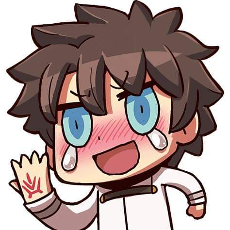
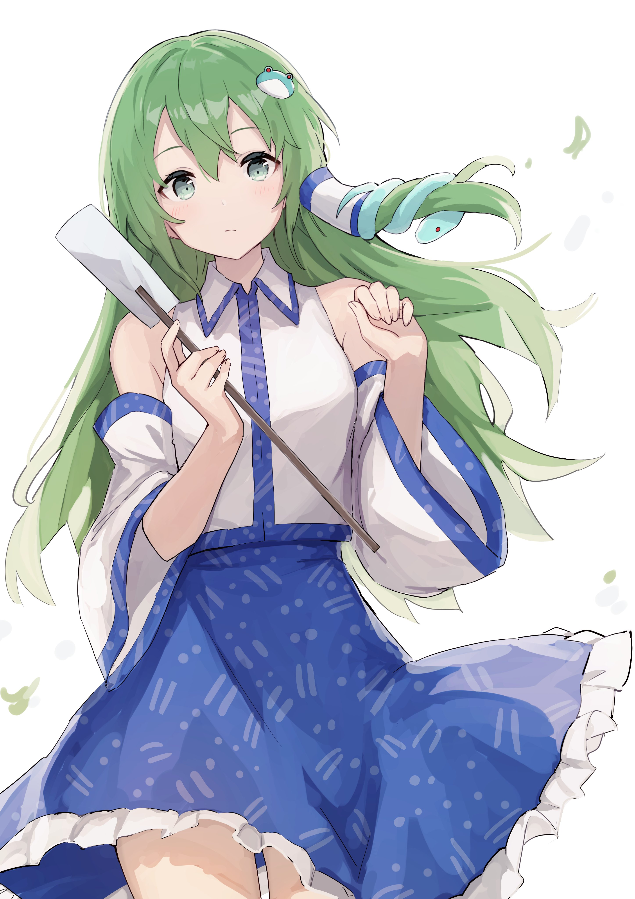

Nice to meet you, visitors of this website. My name is Kurogane
Toyama, a first-year student about to enter university. I have several
hobbies such as coding, writing stories, and playing games (gacha games included). Though I'm not
really excellent at any of them, I still enjoy doing them a lot.
While I appreciate being to learn things properly at university, it still
suits me more to try to learn on my own. I suppose that's what
allows me to discover the most about myself. So you may see this website
as being poorly designed with a lot of messy lines of codes, but I sincerely
enjoyed making this website, even if it's not up to my expectations.
I suppose all of this should sum up the basics of my character. Feel free to
explore this website, though I have to say there isn't much to it.
Also, I'm a weeb. A very experienced weeb.

As I mentioned earlier, I'm a weeb. As well as a Touhou fan.
This is my dearest girl, Kochiya Sanae. As for how I came to know and love her,
well, that's a secret.
But I will tell you one thing.
No one can ever replace her in my heart. She's just that special.